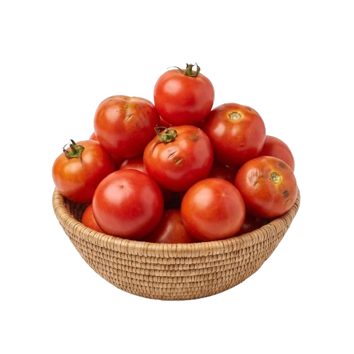
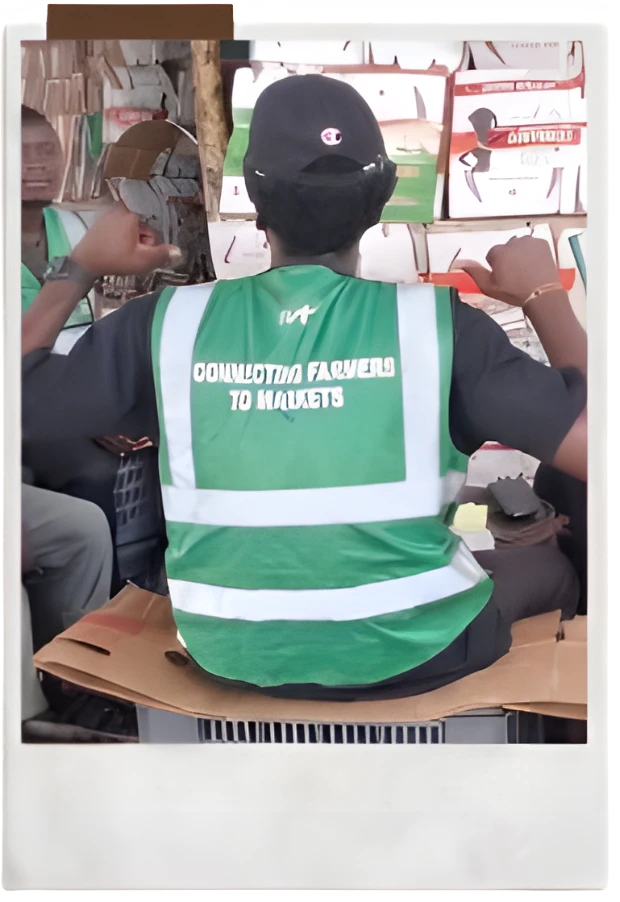

Le trajet
Votre tomate vient de Bouaké · Korhogo.
Chaque produit de la roue a sa route jusqu'au marché de gros d'Adjamé. Choisissez-en un autre plus haut : son trajet s'allume sur la carte.

01 — La terre
Chaque produit a son bassin.
Korhogo, Bouaké, Divo, Agboville, Tiassalé, Man… Le sol, la pluie et la saison décident de ce qui pousse, et quand.
02 — Le producteur
Rang après rang.
Le producteur conduit sa parcelle du semis à la maturité. C'est dans le champ que se joue la qualité de ce qui arrivera au marché.
03 — La récolte
Récolte du jour.
Triée au conditionnement : cageot, sac ou carton selon le produit, pour arriver ferme et vendable.
04 — La collecte
Les volumes se regroupent.
IVT rassemble les récoltes au plus près des parcelles et les achemine vers les marchés de gros d'Abidjan.

Les produits
Six produits, six trajets.
Chaque produit part de son bassin et rejoint Adjamé. Prix de gros de la semaine, ajout direct au panier.
Des champs
aux marchés urbains.
Les volumes se regroupent, le flux se densifie, le marché s'approche. IVT fait le lien entre l'offre des bassins et la demande de la ville.
Le marché en chiffres
Le territoire, lu par ses produits.
Chaque colonne compte les produits du catalogue issus d'un bassin. Tous les flux rejoignent Adjamé, où les prix sont relevés chaque semaine.